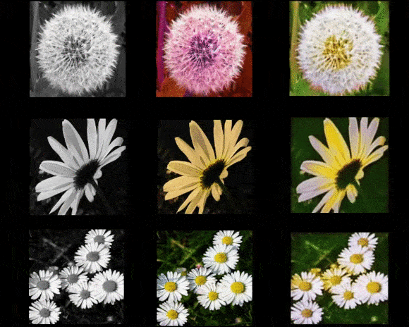
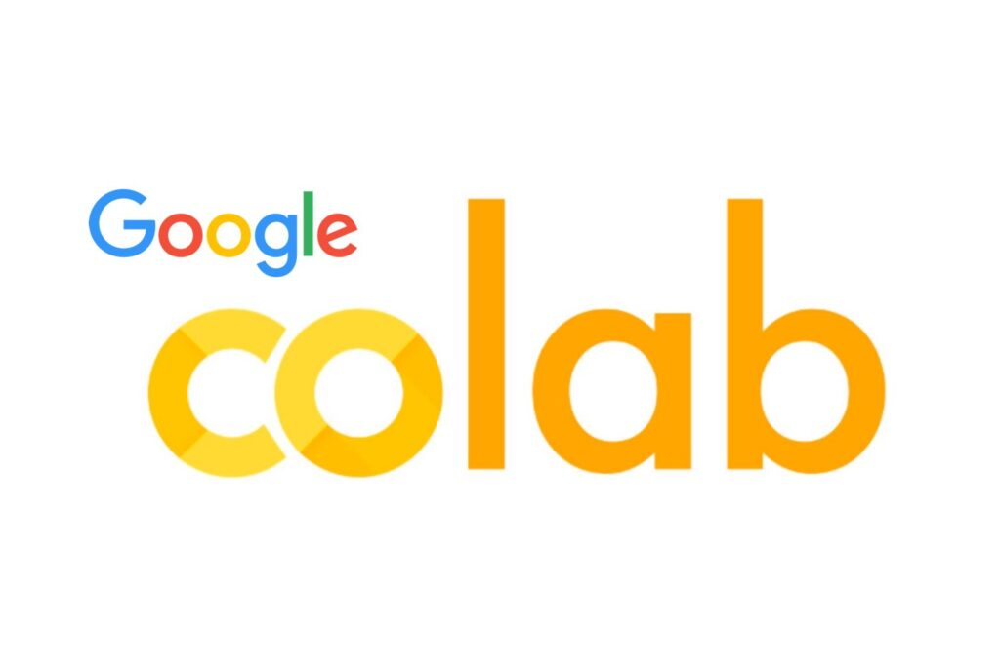
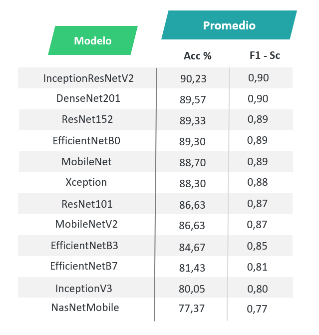

Acerca del proyecto
En este espacio se proporciona la información esencial para realizar clasificación y clonación de la voz con métodos de Deep Learning y mapas tiempo frecuencia de registros de audio. La información que podrás encontrar es la siguiente:
- Dataset de audio
- Codigos en Python y Matlab
- Documento final de la investigación
- Repositorio en GitHub
Total de registros de audio
Clasificación
El uso de técnicas del DL en el procesamiento y análisis de señales de voz permite considerar toda la información del audio, tanto en el dominio del tiempo como en el de la frecuencia, su ventaja radica en la posibilidad de obtener automáticamente más información y detalles de los datos bajo estudio, estos resultados permiten ser la entrada a estructuras de redes neuronales capaces de llevar acabo actividades como clasificacion de voz.
Clonación
Para el proceso de clonación se utilizó una Red Generativa Adversaria (GAN) la cual es capaz de aprender a crear contenido dependiendo de cómo haya sido entrenada, en el siguiente ejemplo se entrenó una de estas Redes para crear una imagen a color a partir de una imagen blanco y negro.

- Entrada
- Objetivo
- Salida
Entrenamiento
Para el entrenamiento de los modelos de Deep Learning para la clasificación se utilizó técnicas de Transfer Learning a través de modelos pre-entrenados que ofrece la librería TensorFlow con su modulo Keras. Si no cuentas con el Hardware necesario para realizar el entrenamiento de estos modelos puedes utilizar la plataforma Google Colab que permite escribir y ejecutar código en Python en un navegador.
- Acceso gratuito a GPU, CPU y memoria RAM
- No es necesario configuración
- Facilidad para compartir proyectos
|
|
 |
Mapas Tiempo-Frecuencia
A partir de los audios recopilados se realiza la transformación a imágenes en tiempo frecuencia aplicando la STFT y CWT. La obtención de los mapas de energía se lleva acabo con ayuda del software Matlab.

Estas imágenes resultantes son utilizadas para entrenar y evaluar los modelos a través de la exactitud y el f1-score como medidas de desempeño.

Mas información
Puedes encontrar más información de este proyecto accediendo a los siguientes enlaces. Aquí encontraras nuestro repositorio en GitHub, los códigos implementados, Datasets de audio conformados y el documento final de la investigación con información más detallada.
GitHub Documento Final Datasets Codigos
Autores
Este proyecto fue realizado por